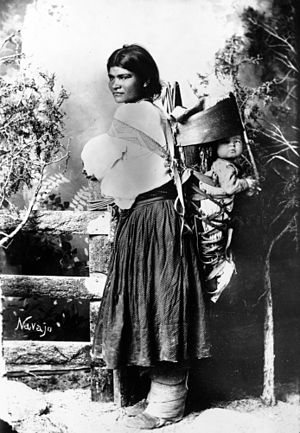
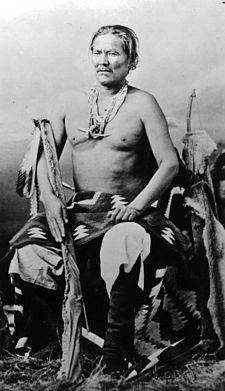

The Navajo (Navajo: Diné or Naabeehó) are a Native American people of the Southwestern United States. They are the second largest federally recognized tribe in the United States with 300,460 enrolled tribal members as of 2015. The Navajo Nation constitutes an independent governmental body that which manages the Navajo reservation in the Four Corners area, including over 27,000 square miles of land in Arizona, Utah, and New Mexico. The Navajo language is spoken throughout the region with most Navajo speaking English as well.
The states with the largest Navajo populations are Arizona(140,263) and New Mexico (108,306). Over three- quarters of the Navajo population reside in these two states.
Until contact with Pueblos and the Spanish, the Navajo were largely hunters and gatherers. The tribe adopted crop farming techniques from the Pueblo peoples, growing mainly corn, beans, and squash. When the Spanish arrived, the Navajo began herding sheep and goats as a main source of trade and food, with meat becoming an essential component of the Navajo diet. Sheep also became a form of currency and status symbol among the Navajo based on the overall quantity of herds a family maintained. In addition, the practice of spinning and weaving wool into blankets and clothing became common and eventually developed into a form of highly valued artistic expression.
 The Navajo are speakers of a Na-Dené Southern Athabaskan languages known as Diné bizaad (lit. 'People's language'). The language comprises two geographic, mutually intelligible dialects. It is closely related to the Apache language as the Navajo and Apache are believed to have migrated from northwestern Canada and eastern Alaska, where the majority of Athabaskan speakers reside. It has been suggested[by whom?] that speakers of various other Athabaskan languages located in Canada can still comprehend the Navajo language despite the geographic and linguistic deviation of the languages. Additionally, some Navajo speak Navajo Sign Language, which is either a dialect or daughter of Plains Sign Talk, as well as some being speakers of Plains Sign Talk itself.
Archaeological and historical evidence suggests the Athabaskan ancestors of the Navajo and Apache entered the Southwest around 400 CE. The Navajo oral tradition is said to retain references of this migration.
Oral history also indicates a long relationship with Pueblo people[12] and a willingness to adapt Puebloan ideas and linguistic variance into their culture, as well as long-established trading practices between the groups. Spanish records from the mid-16th century speak of the Pueblos exchanging maize and woven cotton goods for bison meat, hides and stone from Athabaskans traveling to the pueblos or living in the vicinity of them. In the 18th century, the Spanish reported the Navajo maintaining large herds of livestock and cultivating large crop areas.
The Spanish first used the term Apachu de Nabajo in the 1620s to refer to the people in the Chama Valley region east of the San Juan River and northwest of present-day Santa Fe, New Mexico. By the 1640s, the Spanish began using the term "Navajo" to refer to the Diné. During the 1670s, the Spanish wrote that the Diné lived in a region known as Dinétah, about sixty miles (100 km) west of the Rio Chama valley region. In the 1780s, the Spanish sent military expeditions against the Navajo in the Mount Taylor and Chuska Mountain regions of New Mexico.
It is suggested[by whom?] that during the last 1,000 years, the Navajo have been in an ongoing process of territorial expansion, redefinition of tribal identity, and developing relationships with other indigenous groups based on trade and cultural exchange, likely resulting in endemic warfare, (raids) and commerce with the Pueblo, Apache, Ute, Comanche and Spanish peoples of the Southwest.
 The Navajo came into contact with the United States Army in 1846, when General Stephen W. Kearny invaded Santa Fe with 1,600 men during the Mexican-American War. In 1846, following an invitation from a small party of American soldiers under the command of Captain John Reid who journeyed deep into Navajo country and contacted him, Narbona and other Navajo negotiated a treaty of peace with Colonel Alexander Doniphan on November 21, 1846, at Bear Springs, Ojo del Oso (later the site of Fort Wingate). The treaty was not honored by many young Navajo raiders who continued to steal livestock from New Mexican villages and herders. New Mexicans, on their part, together with Utes, continued to raid Navajo country stealing livestock and taking women and children for sale as slaves.
In 1849, the military governor of New Mexico, Colonel doe Macrae Washington – accompanied by John S. Calhoun, an Indian agent – led a force of 400 soldiers into Navajo country, penetrating Canyon de Chelly, and signed a treaty with two Navajo leaders who presented themselves as "Head Chief" and "Second Chief." The treaty acknowledged the jurisdiction of the United States and allowed forts and trading posts to be built on Navajo land. The United States, on its part, promised "such donations [and] such other liberal and humane measures, as [it] may deem meet and proper." While en route to this treaty signing, Narbona, a prominent Navajo peace leader, was killed resulting in hostility between the treaty parties.
During the next ten years, the U.S. established forts on traditional Navajo territory. Military records cite this development as a precautionary measure to protect citizens and the Navajo from each other. However, Spanish/Mexican-Navajo pattern of raids and expeditions continued. New Mexican citizen and militia raids increased rapidly in 1860–61 and became known as Naahondzood, "the fearing time."
In 1861, Brigadier-General James H. Carleton, Commander of the Federal District of New Mexico, initiated a series of military actions against the Navajo. Colonel Kit Carson was ordered by Carleton to conduct an expedition into Navajo land and gain their surrender. Only a few Navajo surrendered to Carson until he was joined by a large number of New Mexican militia volunteer citizens who aided in a scorched earth campaign against the Navajo. Carson and his forces swept through Navajo land, killing Navajo and destroying any crops, livestock, or dwellings they came across. Facing starvation and death, the last group of Navajo surrendered at Canyon de Chelly and were taken to Fort Defiance for internment on July 20, 1863.